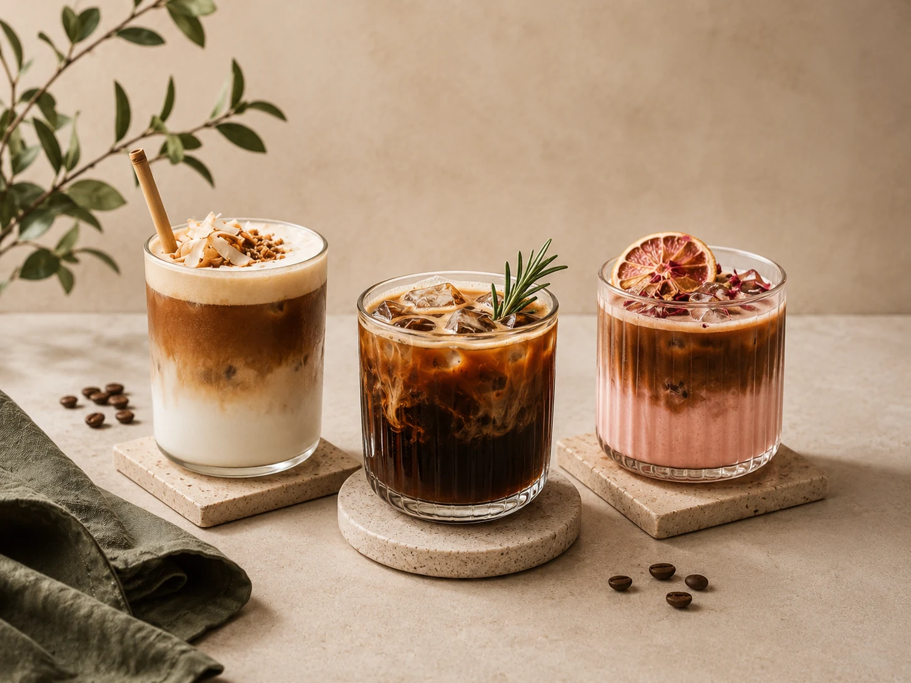
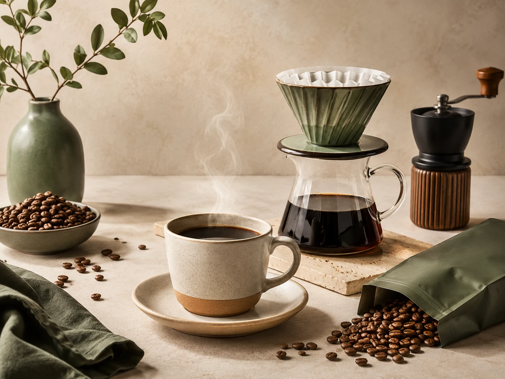
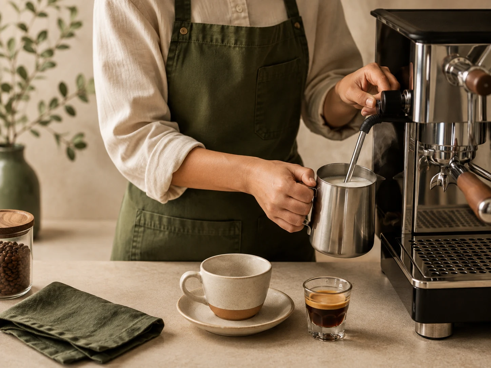
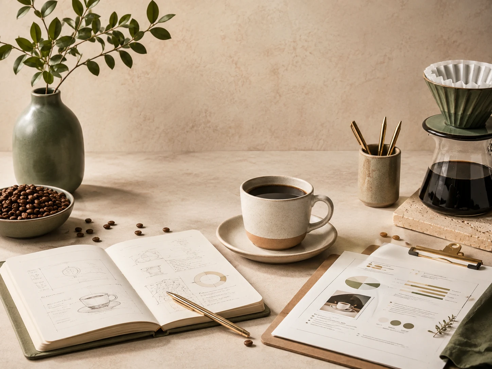
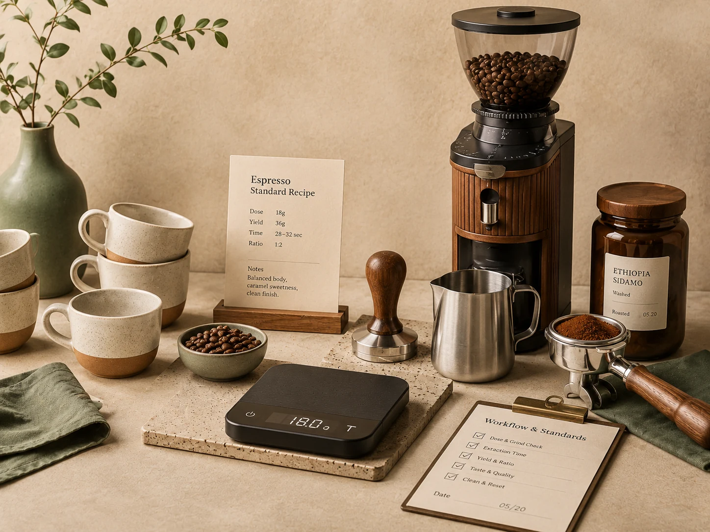

01
Signature Menu Development
Original drinks, natural flavor systems, costing, recipes and a menu identity built around your café.
Ask about this serviceCoffee Innovation Studio · Jordan
YBUNN develops original beverage menus, trains barista teams, prepares café systems and turns bold ideas into repeatable, profitable experiences.

Our belief
Leaving the familiar is not a gamble. Blind imitation is. We use difference as a method—and innovation as a way to express what makes every café unmistakably its own.
What we build
Every service is designed to move from a strong idea to a clear, trainable and commercially useful result.

Original drinks, natural flavor systems, costing, recipes and a menu identity built around your café.
Ask about this service
Hands-on training that turns recipes into repeatable service, confident technique and stronger workflow.
Ask about this service
Concept, equipment, menu structure, workflow and launch support shaped into one clear operating system.
Ask about this service
Recipe cards, quality checks, station standards and practical systems that keep every cup consistent.
Ask about this serviceBarista training
Teams perform better when they understand flavor, extraction, workflow and quality—not when they only memorize steps.
Café setup & consulting
Concept, equipment, menu, stations, workflow and standards are shaped together—so the experience works as well as it looks.
How we work
Every stage has an image, a purpose and an output—nothing is left as an empty placeholder.
We understand the café, audience, goals and the exact challenge that needs to change.
Ideas, recipes, systems and training are developed around the project—not copied from a template.
We test flavor, workflow, repeatability, cost and operational fit before anything goes live.
The final system is handed over with clear standards, team guidance and launch support.
Selected directions
These image-led cards are ready for your final case studies, before-and-after details and measurable project results.
A complete drink concept—from flavor direction and testing to final recipes and service standards.
A focused program that upgrades technique, speed, consistency and the complete bar workflow.
A practical plan for the concept, menu, equipment, stations and opening process.
Start a project
Tell us what you are building, what needs to change and where you are in the process. We’ll shape the right next step.